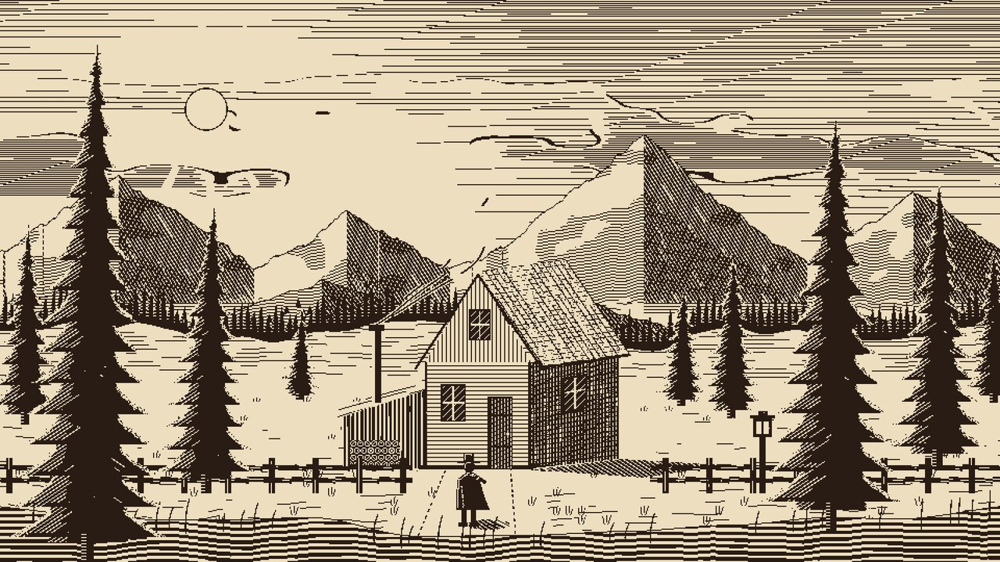
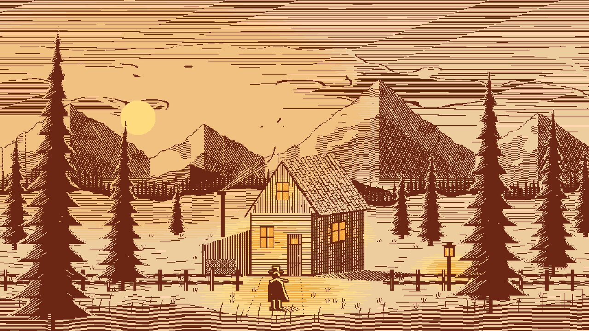
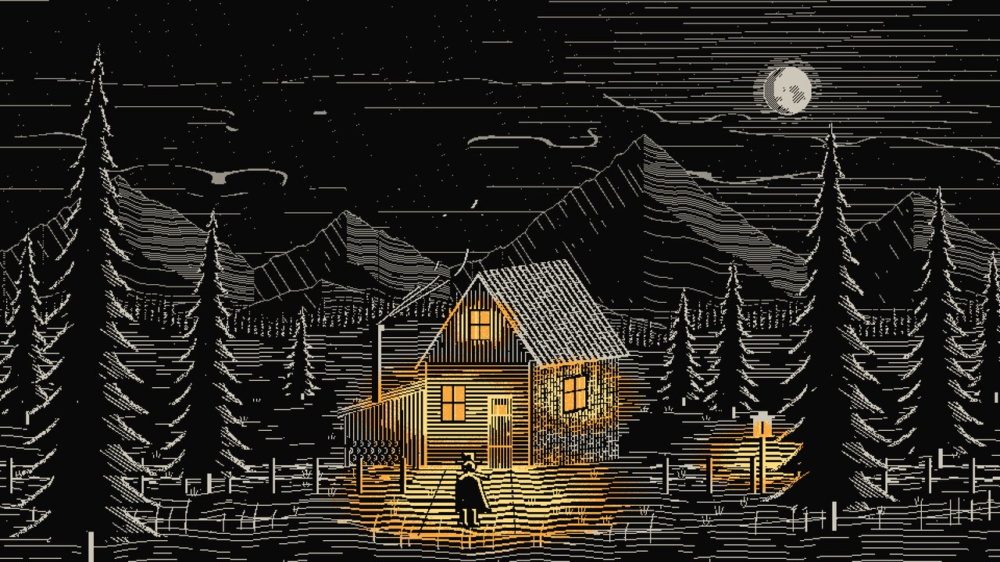
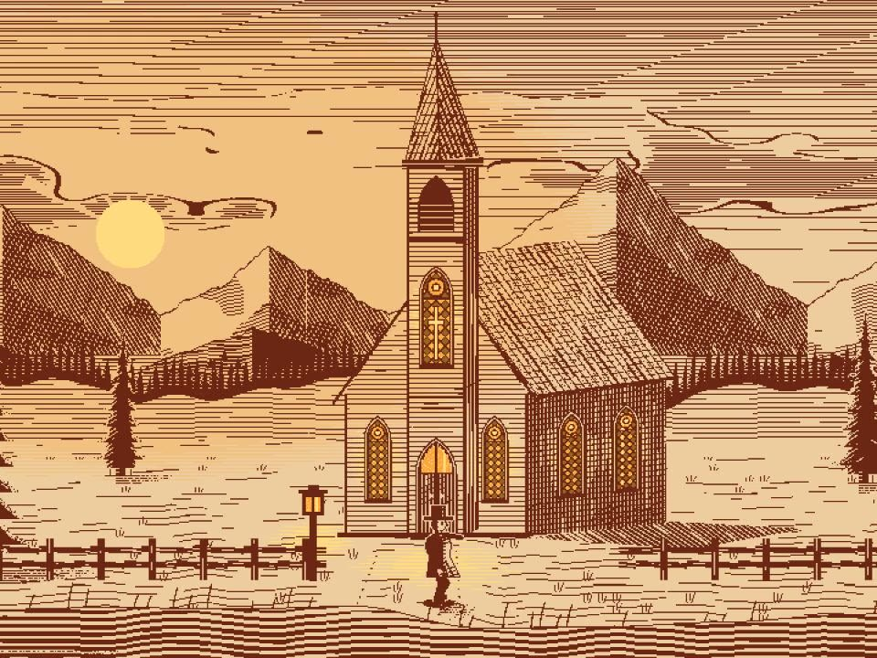
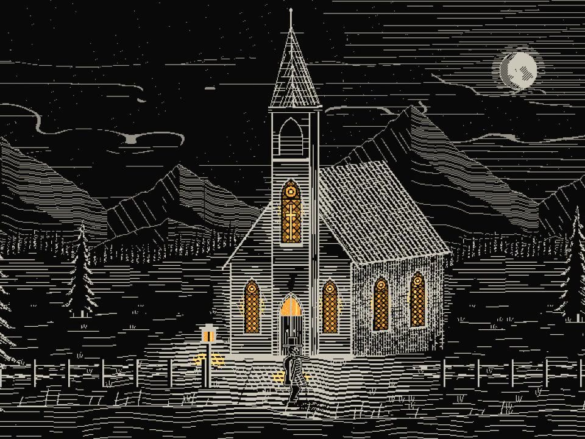
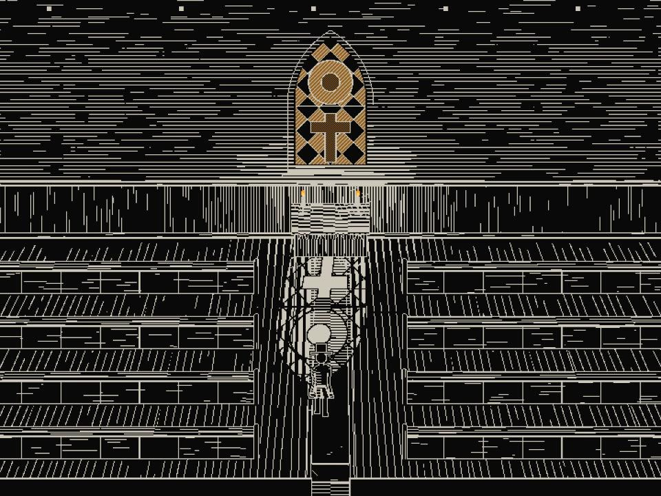

Contrition
In development
For we wrestle not against flesh and blood, but against principalities, against powers, against the rulers of the darkness of this world, against spiritual wickedness in high places.
Ephesians 6:12
How would Christ appear in another world? C.S. Lewis answered that question by imagining Aslan in the world of Narnia. I ask the same question, but of a very different world.
A 2D game where the story comes first and your choices matter. If you've played FAITH: The Unholy Trinity or Undertale, it's in that family. It's dark and the evil is real, so make your choices count.






These stills are from the game. The art isn't final.
- Platform: PC
- Built with: Godot 4.7